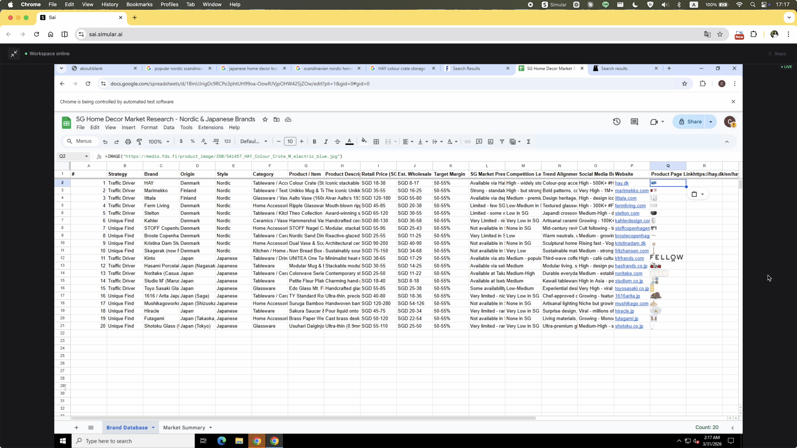

A task-based audit testing SAI against a non-technical solo founder. Surfaces four structural UX gaps in how the product handles multi-step agentic work.
Summary
Tested against a non-technical SMB founder running a multi-step research and delivery task — the scenario that best surfaces where human-in-the-loop design breaks down.
Technical users have scripting, APIs, and no-code alternatives. SAI's real opportunity is with users who don't. That's who this audit tests for.
Julia has a product curation call on Thursday. She opens SAI and types:
"I am launching a home decor curation brand in Singapore, focusing on Nordic and Japanese home accessories (e.g., vases, small lighting, stools, stationery — no large furniture). Please research brands popular in Singapore and trending in Europe/Japan, curate 20 items with market analysis and pricing, then compile everything and images into a Google Sheet report I can use for import decisions."
To deliver a usable result, the agent needs to move through four capabilities in sequence — each one building on the last.
There's no designed moment where the user and agent align on approach before execution starts. Without this, mismatches between user intent and agent strategy are only discovered after steps have been wasted — or after a hard stop.
The agent doesn't have a model for "pause and ask." When it needs credentials, clarification, or approval mid-task, it either retries silently or stops entirely. There's no interaction pattern for the user to step in, help, and let the agent continue.
The task ran across multiple sessions. These are the key moments — progress, friction, and failure.
The homepage tries to guide users with example tasks — the right instinct. But presenting too many at once creates cognitive overload rather than clarity. On top of that, the layout immediately exposes a virtual desktop panel on the right. For a first-time user, there's no explanation of what the VM is, why it's there, or what they're supposed to do with it. Two unfamiliar concepts compete for attention before anything has even started.

Clicking into the VM to see what the agent is doing transfers control to the user. The agent pauses. There's no observer mode — any attempt to watch could accidentally take over.
The execution stream updates constantly, but its contents have no hierarchy. Process logs, agent reasoning, and required actions all look identical — a single animated line of text with no way to distinguish what the agent is doing from what it needs. There's no high-level progress summary, no stage indicator, no sense of how far along the task is. The user is left staring at a stream they can't read, repeatedly wondering whether anything is actually happening.

The task was running entirely inside the agent's virtual machine. When Google Sheets access was needed, the auth prompt appeared as a native dialog on the user's local desktop — completely outside the VM. The user assumed the agent would handle everything remotely, so this was unexpected. They denied it.

After the denial, the agent didn't pause or ask how to proceed. The auth prompt kept reappearing. The user had to explicitly type into the chat — at least twice — asking to sign in through the VM instead. Only then did the agent accept the instruction and open the auth flow inside the VM.

A "Browser JS Execution — Safety Check" dialog appears, showing raw JavaScript code. For a non-technical user, there's no way to evaluate what this code does, why the agent needs it, or whether allowing it is safe. The permission UI is written for developers, not for the person being asked to approve it.

The agent stops mid-task with a single line: "Please let me know if you'd like me to continue or try a different approach." No summary of what was completed, no partial output handed over, no indication of how close it was to finishing. The user is left with nothing actionable — confused about what just happened and with no clear path forward except starting over from scratch.

The original prompt explicitly asked for images of the selected items. The agent produced the spreadsheet without them and gave no explanation for the omission. The user had to ask again — restating a requirement that was already there from the start.

The agent ultimately produced a Google Sheet in the cloud — a genuinely complex multi-step task involving research, curation, and remote file creation. The output is passable: items are listed, pricing is included. But the product selection feels generic and the analysis lacks the depth needed for real import decisions. The capability is there; the quality of judgement is not yet at the level where you'd act on it without review.
